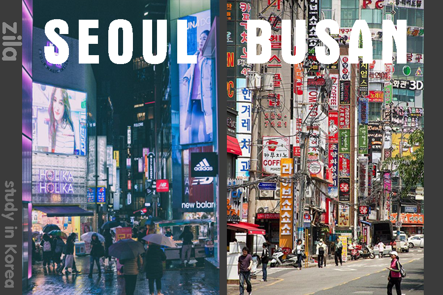

- Chọn trường đại học Hàn Quốc cho đúng?
Bất kỳ ai đi du học Hàn Quốc cũng nên tìm hiểu kỹ về các trường đại học và bắt đầu băn khoăn làm thế nào để lựa chọn trường đại học Hàn Quốc tốt cho mình? Chẳng hạn như có nên chọn trường Top 1% hoặc có nên chọn trường Visa thẳng không? Và nên chọn trường đại học tại Seoul hay Busan hay ở các tỉnh?
Hiện tại Hàn Quốc có khoảng 229 trường đại học khác nhau, trong đó 50 trường đại học quốc gia, còn lại là các trường đại học tư thục (chưa tính số lượng trường cao đẳng). Các trường đại học của Hàn Quốc được phân bố đều các tỉnh, thành phố. Tại thủ đô Seoul có 43 trường và khu vực Gyeonggi-do (nằm giáp Seoul) với 36 Trường đại học. Khu vực Busan với 15 Trường đại học.
Hàn Quốc gồm có 2 dạng trường: Đại học quốc gia và Đại học tư thục. Về cơ bản cũng khá giống tại Việt Nam nhưng số lượng trường đại học tư thục chiếm đa số tại Hàn Quốc. Thường thì trường đại học quốc gia sẽ phân bố đều ở các tỉnh tại Hàn Quốc. Về chất lượng đào tạo và cơ sở vật chất thì 2 loại trường trên sẽ không chênh lệch nhau quá nhiều và mỗi loại trường sẽ có ưu điểm, lợi thế và mức học phí khác nhau.
- Bảng phân bố các trường đại học của Hàn Quốc theo khu vực
|
Trường Hàn Quốc theo khu vực |
Số lượng | ĐH tư thục | ĐH quốc gia |
| Seoul | 43 | 38 | 5 |
| Busan | 15 | 11 | 4 |
| Daegu | 3 | 1 | 2 |
| Incheon | 6 | 4 | 2 |
| Gwagju | 11 | 8 | 3 |
| Gyeonggi-do | 36 | 34 | 2 |
| Gangwon-do | 14 | 9 | 5 |
| Chungcheongbuk-do | 12 | 8 | 4 |
| Chungcheongnam-do | 18 | 16 | 2 |
| Jeollabuk-do | 11 | 8 | 3 |
| Jeollanam-do | 11 | 7 | 4 |
| Gyeongsangbuk-do | 20 | 14 | 6 |
| Gyeongsangnam-do | 11 | 7 | 4 |
| Jeju-do | 2 | 1 | 1 |
| TỔNG CỘNG | 229 | 179 | 50 |
2. Vậy nên chọn trường ở thành phố lớn hay ở các tỉnh tại Hàn Quốc?
Mỗi khu vực ở Hàn Quốc dù là ở Seoul, Busan hay ở tỉnh đều có rất nhiều trường tốt và mỗi khu vực cũng sẽ có những ưu nhược điểm khác nhau. Nếu chọn trường ở Seoul thì bạn phải chấp nhận học phí và sinh hoạt phí cao hơn so với các khu vực khác, nhưng đổi lại bạn sẽ được học trong thành phố được đánh giá là “Thành phố năng động và nhộn nhịp nhất” tại Hàn Quốc.

- Ưu nhược điểm của các khi học trường ở Seoul, Busan hay các tỉnh
| TT | Đại học ở Seoul | Đại học ở Busan & các tỉnh |
| 1. Giọng nói | Giọng chuẩn Hàn Quốc | Giọng chuẩn (ở trong trường)
Giọng địa phương (người dân) |
| 2. Chi phí | 10.000 – 12.000 USD/năm | 8.000 – 10.000 USD/năm |
| 3. Môi trường | Năng động, nhộn nhịp nhưng hơi đông đúc ồn ào | Không quá đông đúc, yên bình và thoải mái hơn |
| 4. Ưu điểm | – Môi trường vô cùng năng động, nhộn nhịp
– Tập trung rất nhiều trường đại học hàng đầu – Nhiều chương trình lễ hội, văn hoá, khu vui chơi, giải trí – Giọng nói chuẩn |
– Học phí, sinh hoạt phí thường rẻ hơn các trường Seoul
– Môi trường không quá đông – Vẫn có nhiều trường để lựa chọn – Nhiều chương trình lễ hội, văn hoá, khu vui chơi, giải trí (ở Busan) – Giọng trong trường học chuẩn, vẫn nghe được giọng địa phương khi tiếp xúc môi trường bên ngoài và thuận lợi sau này làm việc |
| 5. Nhược điểm | – Học phí và sinh hoạt phí cao
– Tỷ lệ cạnh tranh việc làm khi ra trường cao – Có thể bất lợi khi khó nghe giọng nói các khu vực khác |
– Ở các tỉnh có thể sẽ hơi thiếu năng động (trừ Busan)
– Có thể bị ảnh hưởng bởi giọng địa phương trong quá trình tiếp xúc với người dân. |
3. Nên chọn trường Quốc gia hay Tư thục khi đi du học Hàn Quốc?
Bất kỳ ai qua Hàn Quốc cũng đặt câu hỏi nên chọn trường đại học nào cho phù hợp với bản thân mình mà quên đi điều kiện và học lực của bản thân. Vì vậy, các bạn cũng nên tìm hiểu rõ về các trường đại học Hàn Quốc yêu cầu điều kiện, xét tuyển như thế nào trước khi nộp hồ sơ nhập học nhé.
- Bảng so sánh đại học Quốc gia & Tư thục ở Hàn Quốc
| Danh mục | Đại học Quốc Gia | Đại học Tư Thục |
| Số lượng | 50 | 179 |
| Chất lượng | Tốt | Tốt |
| Đơn vị thành lập | Do nhà nước, chính quyền thành lập | Các tổ chức, cá nhân thành lập |
| Cơ sở vật chất | Chưa được đầu tư hiện đại bằng ĐH Tư Thục | Rất hiện đại và đầy đủ |
| Học phí khóa tiếng | 4.800.000 – 6.600.000 KRW | 4.000.000 – 6.600.000 KRW |
| Học phí chuyên ngành trung bình | 3.000.000 KRW/kỳ | ~3.700.000 KRW/kỳ |
| TOP 10 trường ĐH tốt nhất Hàn Quốc |
2 trường | 8 trường |
| 1- Đại học Quốc gia Seoul | ✓ | |
| 2- Đại học KAIST | ✓ | |
| 3- Đại học Korea | ✓ | |
| 4- Đại học Yonsei | ✓ | |
| 5- Đại học Sungkyunkwan | ✓ | |
| 6- Đại học khoa học & công nghệ Pohang | ✓ | |
| 7- Đại học Hanyang | ✓ | |
| 8- Đại học Kyunghee | ✓ | |
| 9- Đại học nữ Ewha | ✓ | |
| 10- Đại học ChungAng | ✓ |
Việc chọn trường đại học quốc gia hay tư thục tại Hàn Quốc đều không quá quan trọng. Mà quan trọng là bạn thấy mình có hợp với trường đó hay có đáp ứng đủ điều kiện nhập học của trường hay chưa. Hãy cố gắng xây dựng cho mình một bộ hồ sơ tốt về cả điểm học tập và trau dồi thêm năng lực của bản thân. Điều đó đóng vai trò quyết định liệu bạn có khả năng nhập học vào ngôi trường mà bạn mong muốn hay không?
4. Đại học TOp 1% (Visa thẳng) là gì?
Trường Top 1% ưu tiên Hàn Quốc là danh sách các trường đại học Hàn Quốc được cơ quan thẩm định công bố hàng năm, tạo điều kiện thuận lợi hơn khi sinh viên khi nộp hồ sơ theo học các trường này. Trường top 1% là các trường có tỷ lệ sinh viên quốc tế cư trú bất hợp pháp dưới 1% ở Hàn Quốc. Con số này nhằm công nhận các trường này quản lý du học sinh tốt hay không? Nhưng không phải là kết quả đánh giá chất lượng đào tạo của các trường.
| Tiêu chí | Ưu điểm | Nhược điểm |
| Đại học TOP 1% ưu tiên Hàn Quốc | – Giảm thiểu hồ sơ xin visa tại Việt Nam
– Có thể được visa thẳng nếu được visa code – Thời gian có kết quả visa sẽ nhanh hơn tùy từng trường |
– Các trường xét hồ sơ rất kỹ (do tỷ lệ cạnh tranh cao)
– Các sinh viên có ý định bỏ trốn sẽ chọn những trường này (đặc biệt khu vực phía Bắc) – Tỷ lệ sinh viên bất hợp pháp ở các năm tiếp theo sẽ cao đột biến (nếu trường không quản lý tốt) – Các sinh viên có ý định du học thật sẽ bị ảnh hưởng rất lớn khi ở lại học – Tâm lý du học sinh ỷ lại, không tập trung học tiếng Hàn |
| Đại học thông thường | – Việc xin giấy báo nhập học sẽ dễ hơn– Sinh viên học ở trường thường có ý định du học thật
– Tình hình du học sinh ở trường thường ít biến động |
– Thủ tục xin visa sẽ bình thường, theo đúng quy định
– Không được giảm thiểu hồ sơ khi xin visa tại Việt Nam |
| Đại học chưa được chứng nhận hoặc bị hạn chế | – Xin visa code tại Hàn Quốc
– Số lượng du học sinh Việt Nam đăng ký ít |
– Việc xét hồ sơ tại cục xuất nhập cảnh Hàn Quốc sẽ khắt khe hơn
– Trường có tỷ lệ bất hợp pháp cao |
5. Nên chọn trường nào khi đi du học Hàn Quốc?
Để lựa chọn một trường đại học phù hợp, du học sinh cần lưu ý không nên chọn trường đại học theo cảm tính mà hãy dựa vào sự phân tích kỹ lưỡng theo điều kiện của mỗi cá nhân. Các bạn học sinh, sinh viên hay có khuynh hướng lựa chọn những trường đại học Top đầu Hàn Quốc hoặc những trường danh tiếng nhất. Nhưng liệu lựa chọn đó có chính xác hay không? Sau đây là một số yếu tố để lựa chọn một trường đại học phù hợp:
1. Khả năng tài chính của gia đình:
Nếu muốn du học thì bắt buộc bạn phải có tài chính đủ để học trong 1 năm mà không bị áp lực về các khoản chi phí. Vì vậy, bạn và gia đình nên chuẩn bị từ 8.000 – 10.000 USD, như vậy bạn sẽ có đủ thời gian thích nghi và tập trung học tập. Vì trong thời gian 6 tháng đầu tiên, theo quy định của luật pháp Hàn Quốc là bạn chưa thể đi làm thêm. Nếu tài chính gia đình của bạn bị hạn chế thì không nên đăng ký vào những trường TOP đầu vì thường những trường này học phí rất cao. Chi phí sinh hoạt nếu ở Seoul thì cũng lớn hơn đáng kể so với việc bạn sinh sống ở các thành phố khác.
2. Học lực của bản thân:
Nếu bạn là một người có năng lực học tập tốt thì mới nên chọn trường Top đầu vì các trường Top đầu sẽ có tiêu chuẩn tuyển xét cao hơn nhiều so với các trường ở phía dưới. Không những vậy, vì mang danh là trường hàng đầu Hàn Quốc nên áp lực học tập ở đây sẽ khá khủng khiếp như các bạn thường thấy trong phim. Nếu bạn muốn giành học bổng thì phải vô cùng nỗ lực vì mỗi sinh viên trong các ngôi trường này đều cạnh tranh nhau rất gay gắt về việc này. Bởi lẽ học phí cao mà, nên ai cũng muốn có học bổng để giảm bớt gánh nặng về chi phí. Tóm lại những trường top đầu chỉ thật sự dành cho những bạn học giỏi, muốn thử sức bản thân và gia đình có điều kiện.
3. Định hướng chuyên ngành:
Không phải trường nào cũng có tất cả các chuyên ngành bạn muốn học, mỗi trường sẽ có hững chuyên ngành và thế mạnh riêng của họ. Nếu ngôi trường mà bạn đang theo học khóa tiếng không có chuyên ngành mà bạn yêu thích thì sau khi kết thúc năm học tiếng, bạn có thể chuyển trường.
4. Có người thân tại Hàn Quốc:
Nếu bạn có người thân ruột thịt hay họ hàng (xa) đang sinh sống tại Hàn Quốc (cưới chồng/vợ Hàn Quốc, học tập, sinh sống…) thì sẽ rất thuận lợi. Vì nếu được ở chung cùng với người thân của mình thì gần như bạn không phải tốn chi phí nhà ở – một loại chi phí đắt đỏ nhất ở xứ sở kim chi. Ngoài ra bạn cũng có thể tiết kiệm được tiền ăn uống… mà còn được ở với người thân nữa, không sợ sẽ phải cô đơn một mình.
5. Số lượng du học sinh Việt Nam đang theo học:
Nếu bạn lựa chọn ngôi trường có nhiều sinh viên Việt Nam đang theo học thì bạn sẽ ít cảm thấy cô đơn hơn. Mà lại có đồng hương cùng sẻ chia, cùng học tập, cùng vui đùa ở xứ người nữa. Tuy nhiên, việc này cũng mang lại một vấn đề khác, chính là có quá nhiều người Việt Nam thì bạn sẽ cảm thấy như mình đang học ở Việt Nam. Không tạo ra cho mình một môi trường học tập khác biệt. Nếu bạn là người muốn thử thách, muốn mới lạ thì nên hạn chế chọn những ngôi trường đang có quá nhiều sinh viên Việt Nam nhé.
6. Các trường đại học Hàn Quốc theo chuyên ngành
| STT | Phân loại Trường đại học Hàn Quốc theo ngành | Các trường đại học Hàn Quốc |
| 1 | Du học Hàn Quốc ngành du lịch |
|
| 2 | Du học Hàn Quốc ngành làm đẹp |
|
| 3 | Du học Hàn Quốc ngành quản trị khách sạn |
|
| 4 | Du học Hàn Quốc ngành truyền thông |
|
| 5 | Du học Hàn Quốc ngành quản trị kinh doanh |
|
| 6 | Du học Hàn Quốc ngành thiết kế thời trang |
|
| 7 | Du học Hàn Quốc ngành y |
|
| 8 | Du học Hàn Quốc ngành nghệ thuật |
|
| 9 | Du học Hàn Quốc ngành điều dưỡng |
|
| 10 | Du học Hàn Quốc công nghệ ô tô |
|
| 11 | Du học Hàn Quốc ngành công nghệ thông tin |
|
| 12 | Du học Hàn Quốc ngành ngôn ngữ Hàn Quốc |
|
| 13 | Du học Hàn Quốc ngành Luật |
|
Thông qua những thông tin trên, hi vọng có thể giúp các bạn định hướng được rõ ràng hơn cách lựa chọn trường đại học phù hợp với điều kiện, mong muốn của bản thân khi đi du học Hàn Quốc.
Để tìm hiểu về các chương trình du học cũng như các suất học bổng của các trường đại học, cao đẳng tại Hàn Quốc, các bạn hãy gọi tới hotline hotline 0879 001 118 của Du học Tín Phát để được tư vấn chi tiết nhé!